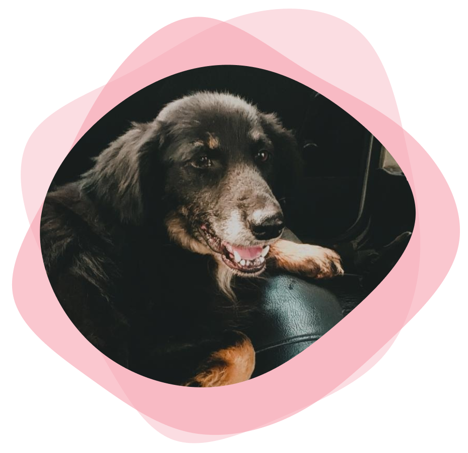

<div class="content">
  <div class="row">
    <div class="col-sm-4 col-lg-6 order-first">
      
    </div>
    <div class="col-sm-8 col-lg-6">
      <h1>Adopciones</h1>
      A demás de amor nuestros animales necesitan cuidado y protección, algunos
      tips para ello son:<br />

      Participalmente informarse sobre los cuidados que requiere cada animal al
      momento de adquirirlo, preferentemente con un profesional veterinario.<br />
      Realizar visitas periódicas a la veterinaria para corroborar que todo este
      bien.<br />
      Darles agua limpia y fresca todos los días, en especial los calurosos.<br />
      Darle alimento acorde a su especie y edad.<br />
      No dejarlos sueltos en la vida pública.<br />
      Realizar paseos diarios o semanales siempre con correa o pechera.<br />
      Y lo más inportante: la castración a los 6 meses de edad en ambos
      sexos.<br />
    </div>
  </div>
</div>
